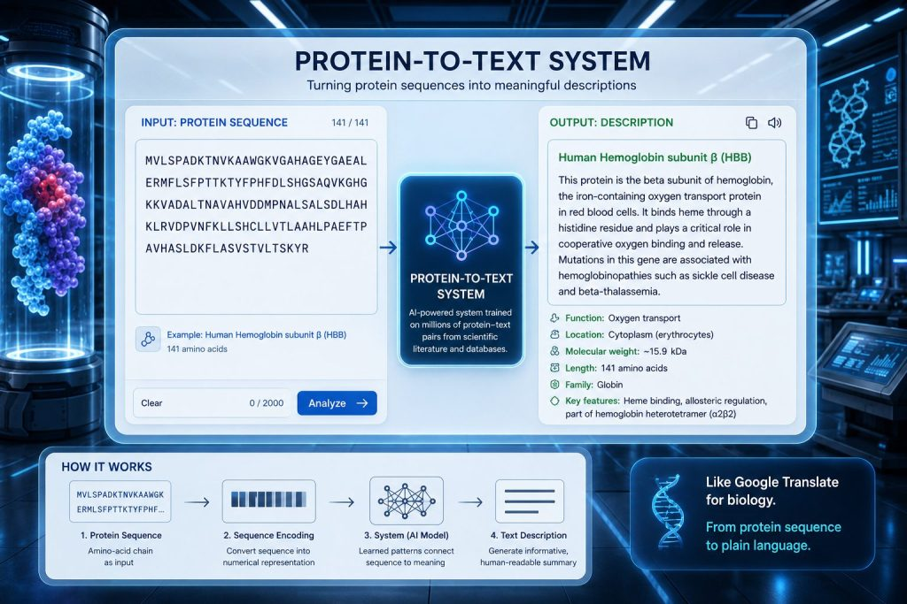

Executive Summary
A joint team from the Technion and Tel Aviv University has released an AI called BetaDescribe (PNAS, July 2026). Feed it a protein sequence and it returns plain-language sentences describing what the protein does. The point is that it can attach a description even to proteins that older methods could not touch because no similar sequence exists. This article looks at what makes those descriptions trustworthy, through the lens of data quality.
The team split the work into a generator, validators, and a judge, building a structure that scores itself, and reported success in describing six proteins whose properties were previously unknown. But the judge and the validators are not experimentally confirmed ground truth; they are yet another learned model that predicts properties from sequence. Because the side that produces the answer and the side that grades it belong to the same family, the question stands: when AI labels data that has no ground truth, who grades the label?
This is a problem we already lived through in text and code, now arriving in biological data. The difference is that with text a human can later read it and catch the error, whereas for a protein that has never been assayed, that after-the-fact check does not exist at all.
Key Figures
The four numbers below compress the backdrop of this article. Sequences have piled up past 200 million, yet only a tiny share have human-verified function, and generative annotation that turns sequences into sentences has already shipped into databases at the scale of tens of millions. By contrast, the sample where BetaDescribe reported success is six. The gap is large, generation is already at scale, and verification is still small.
Source: UniProt statistics and phys.org (2026)
200M+
Sequences in UniProt
Only a tiny share are experimentally verified
570K vs 250M
Swiss-Prot vs TrEMBL
Human curation vs automatic annotation
49M
Sequences annotated by ProtNLM
Generative annotation has already shipped
6
Proteins BetaDescribe validated
Promising, but the sample is small
Sequences Overflow, Function Stays Blank
The protein database UniProt holds more than 200 million amino-acid sequences. As sequencing costs keep falling, new sequences keep arriving fast. The problem is that only a tiny fraction of them have a known function, that is, a description of what the sequence actually does. The letters of the sequence overflow, but their meaning is mostly left blank.

This gap is sharply visible inside UniProt itself. Swiss-Prot, where humans read the literature and curate annotations by hand, holds only about 570,000 entries. TrEMBL, where a computer fills in annotations automatically, exceeds 250 million. The difference in scale between hand-polished high-quality annotation and machine-applied bulk annotation is the fundamental structure of this field.
The traditional way to figure out function was to find a similar protein. If a sequence resembles one whose function is already known, that description is copied over. Similarity searches like BLAST are the classic example. But when no similar protein exists, this approach cannot produce an answer. The more novel and unfamiliar a protein is, the more likely it is to be left blank.
What BetaDescribe Does
BetaDescribe aims at this blank. Input a protein sequence and it lays out properties in plain-language sentences: the protein's function, its catalytic activity, the metabolic pathways it takes part in, where it settles inside the cell. It is close to a translator that renders the letter string of a sequence into a description a person can read. The underlying language model is a LLAMA2-family model pretrained on large-scale text.

Its biggest distinction is that it is designed to work even when no similar sequence exists. It can attempt a description for the unknown proteins that homology-based methods cannot touch, so it is introduced as a complement to existing automatic annotation. The team also suggests it can be used for in-silico mutation experiments that probe, from sequence alone, which residues or regions matter to function.
The team reported success in generating descriptions for six proteins whose properties were previously unknown. It is a case that shows promise, but six is still a small sample for talking about large-scale deployment. A question naturally follows here. For a description attached to a protein with no known answer, how do we confirm that it is correct?
Generate, Validate, Judge. But the Judge Is a Model Too
BetaDescribe's answer is to divide the roles. Three components take on different jobs.
- The Generator takes a sequence and produces several candidate sentences describing the function.
- The Validators, independently of the generator, predict relatively simple properties such as subcellular location directly from the sequence.
- The Judge compares the generator's candidates against the validators' predictions to decide whether to accept or reject them, keeping up to three descriptions per protein as final candidates.
Since there is no guarantee that what is generated is correct, a separate scoring layer was placed on top. Separating the side that produces from the side that grades is reasonable in itself. If you let the generator grade itself, it tends to be generous toward the answers it wrote.
But neither the judge nor the validators are experimentally confirmed ground truth. Both are yet another learned model that predicts plausible properties from sequence. The baseline for scoring is not the lab but the model's prediction. So this structure cannot escape the shape of "a model grading a model." If the generator and the judge learned from the same signal, the sequence, then errors they both miss can be missed together.
A Problem We Already Met in Text
We first met the structure where one model grades another model's output in text. It is the so-called LLM-as-judge approach, where an LLM evaluates an answer an LLM wrote. In experiments that check whether a citation matches the actual paper, a cheap judge model scored at a level comparable to a frontier model. That means handing judgment to a model is not always a bad thing.
But those cases shared a common premise. What was being scored had a checkable answer. A citation can be opened and compared against the source; code can be run to see whether it passes. Even when the judge model was wrong, a human could later match it against the original and correct it.
For protein function descriptions, that room is far thinner. For a protein that has never been assayed, the answer to compare against does not yet exist in the world. The fact that a judge accepted a description does not become evidence that the description is correct. The final bottleneck of verification is not a faster model but the constraint of time spent confirming in the lab, and that constraint stays.
The Scale Trap and the ProtNLM Precedent
Generative annotation is already in use at scale. ProtNLM, which Google released in 2023, generates a function description for a sequence much like titling it, and was integrated into UniProt's automatic annotation pipeline, naming roughly 49 million sequences. Because it makes new sentences rather than choosing among fixed labels, it is in the same family as BetaDescribe, and so it carries the problem of "how do we confirm the description it made" from the very start.
An annotation applied fast and in bulk is not automatically a correct annotation. Studies analyzing UniProtKB as a whole reported that 64% of proteins carry incomplete annotations and that 83% of functions show inconsistencies where terminology diverges across sources. Errors mostly fall into three branches: wrong annotations that credit a function the protein does not perform, incomplete annotations that record only part of the function, and inconsistent annotations that describe the same function differently across sources.
These figures did not evaluate BetaDescribe; they are the backdrop that existed before generative annotation arrived. But once a wrong label enters a database, the structure where the next model learns from it and copies it forward, spreading the error, is familiar from text as well. The ProtNLM side itself admits that verifying a description generated without external evidence is difficult, and leans on an after-the-fact human verification loop that improves through user feedback.
What Else Is Needed
The possibility BetaDescribe opens is clear. Giving, for the first time, a thread of description to a protein that stayed blank because no similar sequence existed is no small advance. But the moment that description goes into a database as a label, it stops being a research hypothesis and becomes a fact the next model will learn as true. At that boundary, what is needed are principles already familiar to those who have worked with text data.
- Uncertainty marking. Attach to each generated description a confidence that distinguishes confirmed labels from predicted ones, so an unverified description does not circulate as if it were verified.
- Prioritizing experimental verification. Lab time is limited, so rank the labels to confirm first the ones that are most suspect or most consequential.
- Monitoring by error type. Track separately whether the system is especially vulnerable to wrong, incomplete, or inconsistent annotations.
When AI labels data that has no ground truth, what do we grade the label with? This question, repeated in text, has now moved onto the new stage of biological data. Only the stage has changed; the question is the same, and the answer is not very different either. Only when the ability to make a label is matched by a procedure to doubt and verify it does a generated description go beyond a plausible sentence to become data you can trust.
References
Academic Papers
- 1.Dotan, E., Lyubman, I., Bacharach, E., Ehrlich, M., Belinkov, Y., Pupko, T. (2026). "BetaDescribe: Providing rich descriptions from protein sequences." PNAS.
- 2.Dotan, E., Lyubman, I., Bacharach, E., Ehrlich, M., Belinkov, Y., Pupko, T. (2024). "Protein2Text: Providing Rich Descriptions for Protein Sequences." bioRxiv (preprint).
- 3.Gane, A. (2022). "ProtNLM: Model-based Natural Language Protein Annotation." Google Research (preprint).
- 4.Faria, D., Schlicker, A., Pesquita, C., Bastos, H., Ferreira, A.E.N., Albrecht, M., Falcão, A.O. (2012). "Mining GO Annotations for Improving Annotation Consistency." PLOS ONE.
Primary Sources & Official Documentation
- 5.phys.org (2026). "AI system translates protein sequences into text, helping reveal functions of unknown proteins."
- 6.Technion Israel Institute of Technology (2026). "The Language of Proteins." Official blog.
- 7.UniProt Consortium. "Automatic annotation." UniProt Help.